平面解析几何
【有向直线和有向线段】
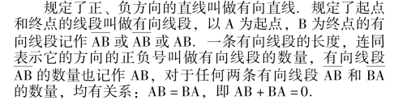
有向线段AB 的长度记作｜ AB ｜，也叫做有向线段AB 的绝对值.对于任何两条有向线段AB 和BA，均有｜AB ｜ ＝｜BA ｜.
定理: 设A，B，C 是有向直线上的任意三点，则不论它们的位置顺序如何，总有AB ＋BC ＝AC.
推论: 设A1、A2、A3、…、An是同一条有向直线上的n 个点，则不论它们的位置顺序如何，都有A1A2＋A2A3＋…＋An－1An＝A1An.
说明: (1) 若有向线段的方向(由起点至终点的方向) 与有向直线的正向相同，则称它是正的；若有向线段与有向直线的正向相反，则称它是负的.
(2) 有向线段的数量与有向线段的长度不同，前者需要考虑表示方向的正负号以及长度两个要素，后者不考虑方向，对于任何一条有向线段AB，均有｜ AB ｜ ≥0，即任何一条有向线段的长度均为非负实数.
【直线上的坐标系】
在直线上规定了正向，取定了原点O 并给定了长度单位后，这条直线叫做坐标轴或数轴，以原点O 引向正方向的半直线叫做正半轴，引向负方向的半直线叫做负半轴.以O 为起点，P 为终点的有向线段OP 的数量x 就叫做点P 的坐标.
根据数轴上任意一点的坐标的定义可知: 数轴上点的集合与实数集之间可以建立一一对应的关系，建立了这一对应关系的系统叫做直线上的坐标系.
说明: 设P 为数轴上任意一点，坐标为x，则
P 在正半轴上< ＝＝＝>x>0；
P 在负半轴上< ＝＝＝>x<0
P 与原点重合< ＝＝＝>x ＝0
【数轴上有向线段的数量公式】
设A，B 为数轴上任意两点，坐标分别为xA、xB，则有向线段AB 的数量AB ＝xB－xA.
有向线段AB 的长度｜AB ｜ ＝｜xB－xA｜.
【两点间的距离公式】
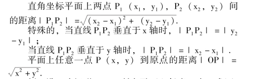
例 设P 为矩形ABCD 所在平面上任意一点，求证:｜PA ｜ 2＋｜PC ｜ 2＝｜PB ｜ 2＋｜PD ｜ 2.
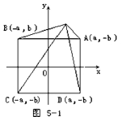
证明: 如图5 －1，建立坐标系，并设各点坐标为A(a，b)，B ( － a，b)，C ( － a，b)，D (a，－ b)，P(x，y).则
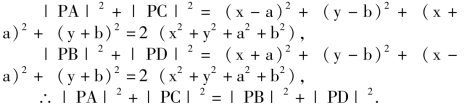
注意: 建立坐标系时，应当依据图形的形状特征，合理选择，以求简化解题过程.
【线段的定比分点与定比分点公式】
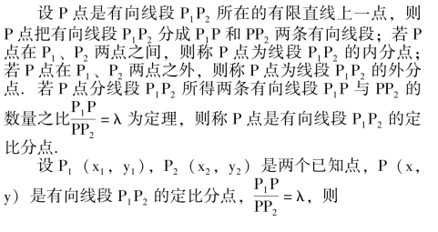
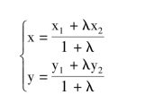
称之为定比分点坐标公式.
特殊的，当P 点的P1P2的中点时，λ ＝1，
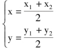
称之为中点坐标公式.
说明: (1) P 点在有向直线P1P2上的位置与λ 的值的对应关系如下表所示.
(2) λ≠－1.这是因为: 当λ ＝－1 时，P 点到P1、P2两点距离相等，且P1P 与PP2方向相反.显然这是不可能的.
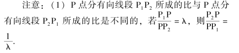
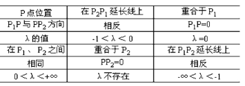
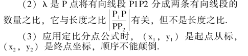
例 设平行四边形的三个顶点是A (a，0)，B (0，b)，C (c，d)，求第四个顶点D 的坐标.
解 平行四边形对角线互相平分，即对角线中点重合.
设D 点坐标为(x，y).
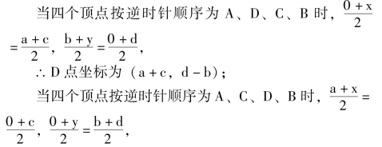
∴D 点坐标为(c－a，b ＋d)；
当四个顶点按逆时针顺序为A、C、B、D 时，
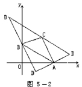
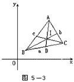
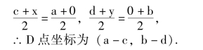
【曲线与方程】
在给定的平面直角坐标系中，若(1) 曲线C 上所有点的坐标都是方程F (x，y) ＝0 的解；(2) 以方程F(x，y) ＝0 的解为坐标的所有点都在曲线C 上，则称曲线C 是方程F (x，y) ＝0 的曲线，称方程F (x，y) ＝0 是曲线C 的方程.
说明: (1) 这一定义包含两方面的含义，一是纯粹性: 曲线C 上的每一点的坐标都满足方程F (x，y) ＝0，无一杂点.二是完备性: 坐标满足方程F (x，y) ＝0 的每一点都在曲线C 上，无一遗漏.换言之，方程F (x，y) ＝0 的解集A 和曲线C 上的点集B 之间有一一对应关系: 对于任意一个有序实数对(x，y) ∈A ＝ { (x，y)｜F (x，y) ＝0}，都有唯一确定的点P∈B 与之相对应；对于任意一点P∈B，都有唯一确定的有序实数对(x，y)∈A 与之相对应.
(2) 这一概念与点的轨迹的概念有共同的属性.一条曲线是适合于某种条件的点的轨迹，是指: ①曲线上所有点都适合于这个条件；②适合于这个条件的所有点，都在这条曲线上.前者即纯粹性，后者即完备性.
(3) 已知曲线求它的方程时，一般应从纯粹性和完备性两个方面证明求得的方程确为所求的曲线的方程.若推导过程准确，则曲线上任意一点的坐标都能适合所求得的方程，这时，证明中的纯粹性部分可以省略，但完备性的证明必不可少.若方程化简过程都是同解变形时，则完备性的证明也可省略.
(4) 在曲线与方程之间建立上述关系后，研究曲线的几何问题就可以转化为研究曲线方程的代数问题.平面解析几何的两个基本问题就是: ①已知曲线求方程；(2)已知方程讨论曲线的性质(截距，对称性，范围等)，并画出曲线.
(5) 方程的曲线与函数的图象是两个既有联系又有区别的概念.它们的共同点是都需具备纯粹性与完备性.它们的不同点是: 函数的图象与垂直于x 轴的直线只有一个交点或没有交点，即在函数y ＝f (x) 中，对于定义域内所取定的每一个x 值，都只有唯一确定的y 值与之相对应.而方程的曲线与垂直于x 轴的直线的交点个数可以多于一个，即在方程F (x，y) ＝0 中，对于在允许的范围内所取定的每一个x 值，可以有两个或两个以上的y 值与之相对应.
【曲线在坐标轴上的截距】
若曲线与x 轴有交点，则从原点到交点的有向线段的数量叫做曲线在x 轴上截距或横截距；若曲线与y 轴有交点，则从原点到交点的有向线段的数量叫做曲线在y 轴上的截距或纵截距.
求曲线在坐标轴上的截距的方法是: 在曲线方程F(x，y) ＝0 中，令y ＝0，求得对应的x 值，就是曲线的横截距；令x ＝0，求得对应的y 值，就是曲线的纵截距.
当横(纵) 截距为正时，曲线与x 轴(y 轴) 的正半轴相交，反之亦真；当横(纵) 截距为负时，曲线与x轴(y 轴) 的负半轴相交，反之亦真；当横、纵截距为零时，曲线通过原点，反之亦真.
【曲线的对称性】
在曲线方程F (x，y) ＝0 中，若以－y 替代y 而方程不变，则曲线关于x 轴对称；若以－x 替代x 而方程不变，则曲线关于y 轴对称；若同时以－x 替代x，以－y 替代y 而方程不变，则曲线关于原点对称.
说明(1) 曲线关于x 轴的对称性，关于y 轴的对称性，关于原点的对称性反映了方程的曲线与坐标系的位置关系的特征.应当把上述三种曲线的特殊的对称性与曲线自身所具有的对称性区别开来.例如，任何一条直线都是中心对称图形，直线上任意一点都可以是它的对称中心，但是当直线不通过原点时，就不能关于原点对称.任何一个圆都是轴对称图形，也是中心对称图形，它的任意一条直径都可以是它的对称轴，圆心是它的对称中心，但是当圆心不在x 轴上时，圆就不能关于x 轴对称，当圆心不在y 轴上时，圆就不能关于y 轴对称，当圆心不在原点时，圆就不能关于原点对称.
(2) 关于x 轴和y 轴都对称的曲线，一定关于原点对称.
例 判定下列方程的曲线关于坐标轴及原点的对称性.
①x－y ＝0；②xy ＝1；③x2＋y2－2ax ＋a2＝1；
④x2－1 ＝0；⑤3x2＋4y2＝1⑥x2－y ＝1⑦x ＋y ＋1 ＝0.
答: ①曲线x－y ＝0 只关于原点对称.
②曲线xy ＝1 只关于原点对称.
③曲线x2＋y2－2ax ＋a2＝1 在a≠0 时只关于x 轴对称，在a ＝0 时，关于x 轴和y 轴对称，关于原点对称.
④曲线x2－1 ＝0 只关于y 轴对称.
⑤曲线3x2＋4y2＝1 关于x 轴和y 轴对称，关于原点对称.
⑥曲线x2－y ＝1 关于y 轴对称.⑦曲线x ＋y ＋1 ＝0关于坐标轴及原点都不具对称性
【曲线的范围】
分析曲线的方程，求出当x 取哪些实数值时才能使y有确定的实数值与之相对应，当y 取哪些实数值时才能使x 有确定的实数值与之相对应，从而确定x 与y 的取值范围，以此确定抽线的范围.
确定曲线范围的常用方法有: ①将曲线方程F (x，y) ＝0 变形成以x 为自变量，y 为因变量的函数的解析表达式y ＝f (x) (一个或几个)，然后求它的定义域，便可以确定x 的取值范围；再将曲线方程F (x，y) ＝0 变形成以y 为自变量，x 为因变量的函数解析表达式x ＝g (y)(一个或几个)，然后求它的定义域，便可确定y 的取值范围.②将曲线方程F (x，y) ＝0 变形成以x (或y)为未知数的一元二次方程，y (或x) 为系数，令其判别式△≥0，确定y (或x) 的取值范围.
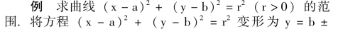
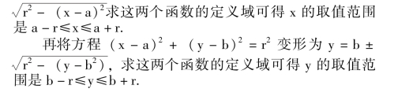
由此可知，曲线(x－a)2＋ (y－b)2＝r2在四条直线x ＝a－r，x ＝a ＋r，y ＝b －r，y ＝b ＋r 所围成的正方形的范围内.
【曲线的渐近线】
设曲线C 上的点P 到定直线l 的距离为d，当点P 沿曲线C 趋向于无穷远时，d 无限趋近于零，则称直线l 是曲线C 的渐近线.
例 求证: x 轴是曲线y ＝ax(a>O 且a≠1) 的渐近线.
证明∵对一切实数x，均有y ＝ax>0，
∴曲线y ＝ax上任意一点P (x，y) 到x 轴的距离等于y.
若0 <a<1，当x→＋∞时，y→0，因此x 轴是曲线y＝ax渐近线.
若a>1，当x→－∞时，y→0，因此x 轴是曲线y ＝ax渐近线.
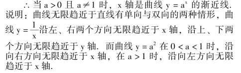
【求曲线的方程】
求曲线的方程的基本步骤是: (1) 建立适当的坐标系.设P (x，y) 为曲线(轨迹) 上任意一点；(2) 根据曲线上的点P 所要适合的条件(轨迹条件) 写出等式；
(3) 将等式转化为含x，y 的解析式，并化简，得出方程.(4) 证明所得方程就是曲线的方程(即证明满足方程的的任意一组实数解 (x，y) 的对应点，都在曲线上)，若方程的化简过程都是同解变形，这一证明可以省略.
例 已知两个定点相距10，求到这两个定点距离的平方和为68 的点的轨迹方程.
解 设两个定点为F1、F2，以F1、F2的连线为x 轴，线段F1F2的中点O 为原点，建立直角坐标系，F1、F2两点坐标为( －5，0)、(5，0) (如图5 －4).
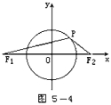
设P (x，y) 为曲线上任意一点，则｜ PF1｜ 2＋｜PF2｜ 2＝68，
由两点间距离公式，得
(x ＋5)2＋y2＋ (x－5)2＋y2＝68，
化简，得x2＋y2＝9.这是以原点为圆心，3 为半径的圆.
【画方程的曲线】
画方程的曲线的基本步骤是:
(1) 讨论性质——通过对曲线方程F (x，y) ＝0 的讨论，求出曲线在坐标轴上的截距，确定曲线的范围，揭示曲线关于坐标轴或原点的对称性，判定曲线有无渐近线等.
(2) 列表找点——将方程F (x，y) ＝0 变形，用x表示y (或用y 表示x)，在允许的范围内给x (或y) 以一系列实数值，求出y (或x) 的对应实数值，列出对应值表，并用这些对应值为坐标画点.注意利用曲线的对称性简化求值找点的过程.
(3) 描点连线——把画出的点连结成光滑的曲线.
说明: 在讨论曲线的性质时，可将曲线方程F (x，y) ＝0 变形成函数y ＝f (x)，利用函数的单调性，周期性，极值，极限等，加深对曲线的形状与变化的认识，以利于描绘方程的曲线.
例 描绘方程y2＝8 (x－1) 3 的曲线.
解(1) 截距: 令y ＝0，得x ＝1，曲线在x 轴上截距为1；令x ＝0，方程y2＝－8 无实根，曲线与y 轴不相交.
(2) 对称性: 以－y 替代y，方程不变，曲线关于x轴对称
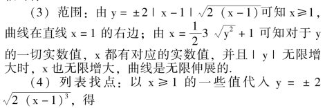
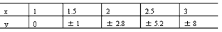
(5) 描点连线(如图5 －5)
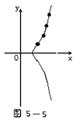
这个方程的曲线是半立方抛物线.
【曲线的交点】
两条曲线交点的坐标是两个曲线方程组成的方程组的实数解；方程组有几组实数解，两条曲线就有几个交点，方程组没有实数解，两条曲线没有交点.
【直线的倾斜角】
一条直线l 向上的方向与x 轴正方向所成的最小正角叫做直线l 的倾斜角，简称倾角.当直线l 与x 轴平行或重合于x 轴时，规定它的倾斜角为0.
直线l 的倾斜角也可以定义为: x 轴按逆时针方向转动到直线l 时所成的最小正角.
说明: (1) 任何一直线的倾斜角α 的取值范围是0≤α<π.
(2) 直线的倾斜角用以表示直线在直角坐标平面内的方向，即对于x 轴的倾斜程度.
【直线的斜率】
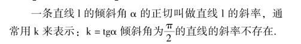
说明: (1) 直线的斜率是用以刻划直线对于x 轴的倾斜程度的量.
(2) 直线的倾斜角和斜率之间的关系如下表所示.
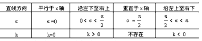
(3) 已知斜率k，可求倾角α: 当k≥0 时，α ＝arctgk，当k<0 时，α ＝π ＋arctgk.
【斜率公式】
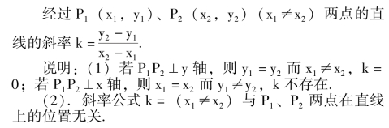
【直线方程的点斜式】
经过点P0(x0，y0)、斜率为k 的直线的方程y－y0＝k (x－x0) 叫做直线方程的点斜式或直线的点斜式方程(图5 －6a)。
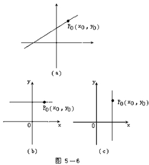
当直线的倾角为0 (平行于x 轴或与x 轴重合) 时，k ＝0，直线的点斜式方程是y ＝y0(图5 －6b)。
说明: (1) 点斜式是直线方程的基本形式，它与确定直线的基本条件之一——一定点与一定方向定一直线——相对应，推求直线方程的其它形式常归结为点斜式.
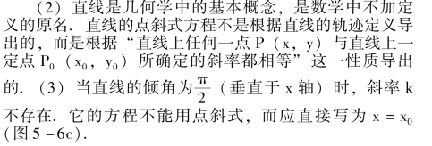
【直线方程的斜截式】
斜率为k，纵截距为b 的直线的方程y ＝kx ＋b 叫做直线方程的斜截式或直线的斜截式方程.当直线的倾角为0 (平行于x 轴或与x 轴重合) 时，k ＝0，直线的斜截式方程是y ＝b.
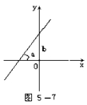
说明: (1) 直线方程的斜截式是点斜式的特殊情形.
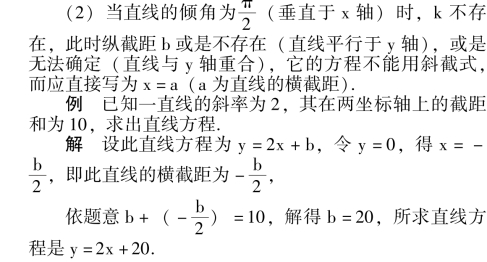
【直线方程的两点式】
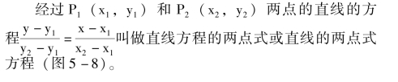
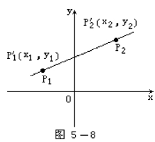
直线方程的两点式也可以写为:
(y2－y1) (x－x1) ＝ (x2－x1) (y－y1)
此时，可不要求x1≠x2，y1≠y2.
直线方程的两点式还可以用行列式写为
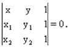
说明: (1) 两点式与确定直线的基本条件之一——两点定一直线——相对应.
(2) 两点式是借助于斜率公式，由点斜式导出的.
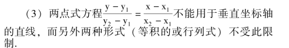
例 已知两点A ( －2，6) 和B (6，4)，试在x 轴上求一点C，使AC ＋BC 的值最小.
解 根据平面几何的知识可知，C 点应是过A 及B点关于x 轴的对称点B′的直线AB′与x 轴的交点，(图5－9).
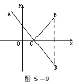
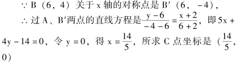
【直线方程的截距式】
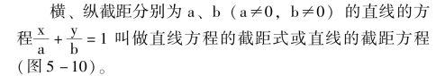
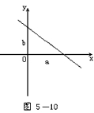
说明: (1) 直线方程的截距式可以看作是两点式的特殊情形而从两点式导出.
(2) 截距式不适用于垂直坐标轴或通过原点的直线.
例 求过点A (1，3) 并且纵、横截距相等的直线方程.
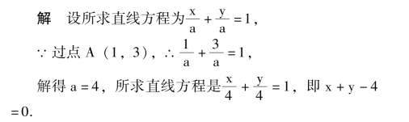
【直线方程的一般式】
关于x，y 的二元一次方程Ax ＋By ＋C ＝0 ((其中A、B 不全为零) 叫做直线方程的一般式或直线的一般式方程.方程为Ax ＋By ＋C ＝0 的直线也叫做直线Ax ＋By ＋C＝0.
将Ax ＋By ＋C ＝0 作为直线方程的一般式基于下述两个定理:
定理1: 直角坐标平面内任何一条直线的方程都是关于x，y 的一次方程.
定理2: 任何一个关于x，y 的一次方程都表示一条直线.
说明: (1) 直线与关于x，y 的一次方程的关系，为用代数的方法研究直线奠定了基础，利用方程和方程组的理论可进一步讨论直线和直线的相互关系，直线和曲线的相互关系；不仅如此，认识并掌握直线与关于x，y 的一次方程关系的理论和方法，对于正确理解并掌握解析几何这一学科的基本方法，解题的基本思路都将发挥重要的作用.
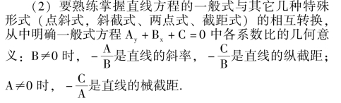
(3) “一般” 二字的含义，不仅在于Ax ＋By ＋C ＝0是关于x，y 的一次方程的一般形式，而且在于它可以作为坐标平面上任何一条直线的方程.与此相反，直线方程的点斜式、斜截式、两点式、截距式都有各自的局限性，总有一些特殊的直线不能用这几种形式来表示.
例 已知四条直线ax ＋y ＋2b ＝0，2ax － (3b ＋1) y＋a ＝0，x－3y －6 ＝0，2x －y －7 ＝0 交于一点，试求a、b 的值.
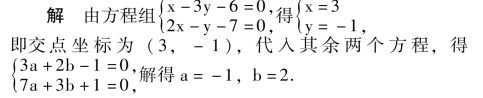
【确定直线的条件】
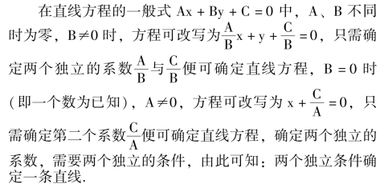
确定直线的两个独立条件常见的有: 两定点坐标；一定点坐标与一定方向(倾角或斜率)；也可以是其它的间接的条件.
【两条直线的平行】
两条不垂直于x 轴的直线11与12平行的充要条件是斜率相等.11∥12⇔k1＝k2.
若两条直线的一般式方程是L1: A1x ＋B1y ＋C1＝0，12: A2x ＋B2y ＋C2＝0，则11与12平行的充要条件是A1B2－A2B1＝0.
11∥12⇔A1B2－A2B1＝0.
例 如图5 －11 已知△ABC 的三边中点是D (1，1)、E (5，3)、F (4，5)，求△ABC 三边所在直线的方程.
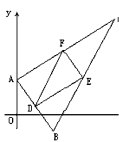
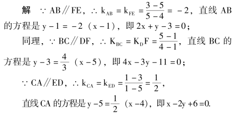
【两条直线的垂直】
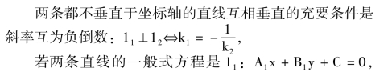
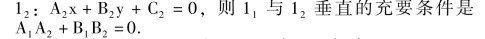
例 如图5 －12，在△ABC 中，已知高AD 和BE 所在的直线方程分别是x ＋5y －3 ＝0 和x ＋y －1 ＝0，边AB所在的直线方程为x ＋3y －1 ＝0，求直线BC、CA 及AB边上的高CF 所在的直线的方程.
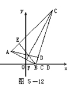
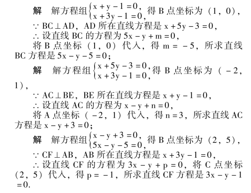
【两条直线所成的角】
直线11按逆时针方向旋转到与12重合时所转的最小角叫做11到12的角或11和12的夹角.
若直线11到12的角是θ1，12到11的角是θ2，则θ1＋θ2＝π，(如图5 －13)
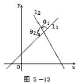
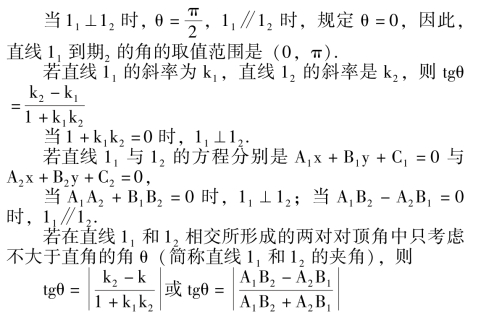
说明: 直线11和12的角与直线12和11的角不同，考虑两条直线所成的角一定要考虑顺序，分清哪条直线是11，哪条直线是12.
而在只考虑不大于直角的夹角时，则不必考虑两条直线的先后顺序.
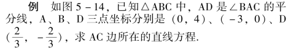
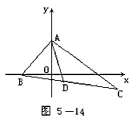
【两条直线的交点】
直线11: A1x ＋B1y ＋C1＝0 和直线12: A2x ＋B2y ＋C2＝0
【点到直线的距离公式】
【两条平行直线间的距离公式】
若两条平行直线的法线式方程分别是xcosθ ＋ysinθ －p1＝0 和xcosθ ＋ysinθ－p2＝0，则d ＝｜p1－p2｜.(两直线在原点的同侧).
若两条平行直线的法线式方程分别是xcosθ ＋ysinθ －p1＝0 和xcos (θ ＋π) ＋ysin (θ ＋π) －p2＝0，则d ＝p1＋p2.
(两直线在原点的异侧)
例 求与直线x－2y ＋3 ＝0 平行，且距离为5 的直线方程.说明: 求两条平行直线间距离的常用方法还有:
(1) 在其中一条直线上任取一点，计算这一点到另一条直线的距离.
(2) 分别求出原点到两直线的距离d1与d2，若两直线在原点同侧，则d ＝｜ d1－ d2｜，若两直线在原点异侧，则d ＝d1＋d2.
【三线共点的条件】
互不平行的三条直线Aix ＋Biy ＋Ci＝0 (i ＝1，2，3)共点(交于一点) 的条件是
证明: 三条直线共点的条件是: 其中两条直线的交点必在第三条直线上.
设直线A1x ＋B1y ＋C1 ＝0 和A2x ＋B2y ＋C2 ＝0 相交，交点坐标是
注意: 三条直线“互不平行” 这一前提条件必不可少.否则，只要其中有两条直线平行，便可导致行列式的值等于0，但这样的三条直线是不可能交于一点的.
例 判断下列三线是否共点:
所以这三条直线不共点.
【三点共线的条件】
P1(x1，y1)、P2(x2，y2)、P3(x3，y3) 三点共线的条件是
说明: 这一结论可以由直线方程的两点式直接导出.它和判断三线共点的条件形式相近，都用行列式表示，但内容不同.
例 求证: 三角形的外心、重心、垂心三点共线.
证明 如图5 －15，建立坐标系，△ABC 各顶点坐标为A (0，a)、B (b，0)、C (c，0).
【圆的定义】
平面上到一个定点的距离等于定长的点的轨迹叫做圆，定点叫做圆心，定长叫做半径.
圆也可以定义为点集M ＝ {P ｜ ｜OP ｜ ＝r}，其中O是定点——圆心，r 是定长——半径.
说明: 圆心确定圆的位置，半径确定圆的大小.
【圆的标准方程】
圆心在(a，b)，半径为r 的圆的方程(x － a)2＋(y－b)2＝r2叫做圆的标准方程.
特殊地，圆心在原点O 是，圆的标准方程是x2＋y2＝r2.
说明: 已知圆心坐标和半径便可直接写出圆的标准方程；反之，只需给出圆的标准方程便可直接确定圆心坐标和半径.
例 求与圆(x ＋3) 2 ＋ (y ＋2) 2 ＝1 同心，并且与x 轴相切的圆的标准方程.
解∵圆与x 轴相切，圆心到x 轴的距离等于半径，而圆心(3，－2) 到x 轴的距离为2.
∴所求圆的标准方程是(x－3) 2 ＋ (y ＋2) 2 ＝4.
【圆的一般方程】
方程x2＋y2＋Dx ＋Ey ＋F ＝0 叫做圆的一般方程.
当D2＋E2－4F <0 时，方程没有对应曲线，叫做虚圆.
说明(1) 将圆的标准方程(x －a)2＋ (y －b)2＝r2展开并整理，可得圆的一般方程；反之，将圆的一般方程配方，可得圆的标准方程.
(2) 将方程x2＋y2＋Dx ＋Ey ＋F ＝0 与一般的关于x、y 的二次方程Ax2＋Bxy ＋Cy2＋Dx ＋Ey ＋F ＝0 相比较，可知圆的一般方程有如下特征:
①B ＝0，即没有xy 项；
②A ＝C ＝1 (A ＝C≠1 时可变形为A ＝C ＝1)，即x2和y2项系数相等.
因此，圆是二次曲线中的一种.
(3) 确定圆的一般方程常采用待定系数法.
例 求经过A ( －6，4)、B ( －4，0)、C ( －3，1) 三点的圆的方程.
解 由④，⑤组成的方程组，得a ＝－5，b ＝2.代入①，得r2＝5，
∴所求圆的标准方程是(x ＋5)2＋ (y－2)2＝5.
解法二 设所求圆的方程为x2＋y2＋Dx ＋Ey ＋F ＝0，将A，B，C 的坐标代入，得
解此线性方程组，得D ＝10，E ＝－4，F ＝26
∴所求圆的一般方程是x2＋y2＋10x－4y ＋26 ＝0.
由于解法一中布列的是关于a，b，r 的二次方程组，而解法二中布列的是关于D，E，F 的线性(一次) 方程组，所以解法二比较简便.
【确定圆的条件】
确定圆的标准方程(x －a)2＋ (y －b)2＝r2，或者圆的一般方程x2＋y2＋Dx ＋Ey ＋F ＝0，各需确定三个独立的系数a，b，r 或D，E，F.因此，各需三个独立的条件.
三个独立条件确定一个圆.
说明: (1) 平面几何中，“不共线的三点确定一个圆”，“已知圆心和半径确定一个圆” 等结论，都是和三个独立条件确定一个圆的结论相一致的.
(2) 已知三个独立条件确定圆的方程使用待定系数法.
例 求圆心在直线2x －y －7 ＝0 上，并且经过(6，－2)、(2，2) 两点的圆的方程.
解 设所求圆的方程为(x－a)2＋ (y－b)2＝r2.
∵圆心在直线2x－y－7 ＝0 上，∴2a－b－7 ＝0.
又∵ (6，－2)、(2，2) 两点在圆上，
∴ (6 －a)2＋ ( －2 －b)2＝r2，(2 －a)2＋ (2 －b)2＝r2.
两式相减，得a－b ＝4，即a ＝b ＋4，代入2a －b －7＝0，得2 (b ＋4) －b －7 ＝0.∴b ＝－1，a ＝3，r2 ＝10.
∴所求圆的方程是(x－3)2＋ (y ＋1)2＝10.
【经过圆上一点的切线和法线】
过圆x2＋y2＝r2上一点(x1，y1) 的切线方程是x1x＋y1y ＝r2，法线方程是
过圆(x－a)2＋ (y ＋b)2＝r2上一点(x1，y1) 的切线方程是(x1－a) (x －a) ＋ (y1－b) (y －b) ＝r2，法线方程是(y1－b) (x－a) － (x1－a) (y－b) ＝0.
说明: (1) 法线是过曲线上一点与曲线在该点的切线垂直的直线.
(2) 过圆上一点(x1，y1) 的切线方程，可按下列变形规则直接由圆的方程求得:
这里，(x1，y1) 必须是圆上一点，否则结论不成立.
(3) 上述结论均可由判定直线和圆相切的方法导出.例 圆x2＋y2＝4 的切线与两坐标轴的正半轴围成的三角形面积为5，求此切线方程.
【求经过圆外一点的切线】
已知P0(x0，y0) 是圆x2＋y2＝r2外一点，求经过P0点的切线方程有两种方法.
方法一设切点为P1(x1，y1)，则过P1点切线方程是x1x ＋y1y ＝r2，
【已知斜率的圆的切线】
【椭圆的定义】
定义1: 平面内到两定点F1、F2的距离之和等于定长的点的轨迹叫做椭圆，两定点F1、F2叫做椭圆的焦点，两焦点间的距离叫做焦距.
椭圆也就是点集M {P ｜PF1｜ ＋｜PF2｜ ＝定长}.
定义2: 平面内到一个定点F 的距离和到一条定直线l 的距离之比为一个小于1 的常数e 的点的轨迹叫做椭圆，这个定点F 叫做椭圆的焦点，这条定直线l 叫做椭圆的准线，这一常数e 叫做椭圆的离心率.椭圆也就是点集M ＝其中F 是焦点，d 是p 点到准1 到距离，e 是离心率.
定义3: 用一个不过直圆锥顶点的平面截直圆锥的侧面.当平面与直圆锥轴线的夹角大于圆锥的半顶角而小于直角时，所截得的曲线叫做椭圆.
【椭圆的标准方程】
说明: (1) 方程中a 表示半长轴，b 表示半短轴，因此a>b>0.
(2) 方程中a 是椭圆上任意一点到两焦点间距离和之半，而c 是焦距之半；a，b，c 恰是一个直角三角形的三边，a 是斜边.
【中心在点(x0，y0) 对称轴平行于坐标轴的椭圆方程】
【椭圆的性质】
中心(椭圆的对称中心): O (0，0).
顶点(椭圆与两对称轴的交点): A′ ( － a，0)、A(a，0)、B′ (0，－b)、B (0，b).
焦点: F1( －c，0)、F2(c，0).c2＝a2－b2.
长轴: 连结两顶点的线段且通过焦点｜A′A ｜ ＝2a.
短轴: 连结两顶点的线段且不通过焦点｜ B′B ｜ ＝2b.
焦距: ｜F1F2｜ ＝2c.
【椭圆的焦点和准线】
说明: (1) 根据性质1 和性质2，可将椭圆定义为:到一个定点的距离和到一条定直线的距离之比是一个小于1 的常数的点的轨迹，这个定点就是椭圆的一个焦点，这条定直线就是对应于这个焦点的一条准线，这个小于1 的常数就是椭圆的离心率.
(2) 椭圆方程与焦点坐标、准线方程的对应关系如下表所示(见p387).
例 已知椭圆的中心是(2，－1)，一个焦点是(2，－4)，相对应的准线是y ＝－5，求此椭圆方程.
解 ∵椭圆中心是 (2，－ 1)，一个焦点是 (2，－4)
c ＝ ( －1) － ( －4) ＝3，
又∵相对应的准线是y ＝－5，
说明: (1) 根据性质1 和性质2，可将椭圆定义为:到一个定点的距离和到一条定直线的距离之比是一个小于1 的常数的点的轨迹，这个定点就是椭圆的一个焦点，这条定直线就是对应于这个焦点的一条准线，这个小于1 的常数就是椭圆的离心率.
(2) 椭圆方程与焦点坐标、准线方程的对应关系如下表所示(见p387).
例 已知椭圆的中心是(2，－1)，一个焦点是(2，－4)，相对应的准线是y ＝－5，求此椭圆方程.
解 ∵椭圆中心是(2，－1)，一个焦点是(2，－4)
【双曲线的定义】
定义1: 平面内到两个定点F1、F2的距离之差的绝对值等于定长的点P 的轨迹叫做双曲线；两定点F1、F2叫做双曲线的焦点，两焦点间的距离｜F1F2｜叫做焦距.
双曲线也就是点集M ＝ {P ｜ ｜PF1｜ － ｜PF2｜ ｜ ＝定长}.
定义2: 平面内到一个定点F 的距离和到一条定直线l 的距离之比为一个大于1 的常数e 的点的轨迹叫做双曲线，这个定点F 叫做双曲线的焦点，这条定直线l 叫做双曲线的准线，这一常数e 叫做双曲线的离心率.
点到准线l 的距离，e 是离心率.
定义3: 用一个不过直圆锥顶点的平面截圆锥的侧面.当平面与直圆锥轴线的夹角小于圆锥的半顶角时，所截得的曲线叫做双曲线.
【双曲线的标准方程】
说明: (1) 方程中a 表示半实轴(与双曲线有交点的对称轴叫实轴)，b 表示半虚轴(与双曲线没有交点的对称轴叫虚轴).
(2) 方程中a 是双曲线上任意一点到两焦点距离之差的绝对值之半，而c 是焦距之半，a，b，c 恰是一个直角三角形的三边，c 是斜边.
【中心在点(x0，y0) 对称轴平行于坐标轴的双曲线方程】
【双曲线的性质】
中心(双曲线的对称中心): O (0，0).
顶点(双曲线与对称轴的交点): A′ ( － a，0)、A(a，0).
焦点: F1( －c，0)、F2(c，0)，c2＝a2＋b2.
实轴(连结两顶点的线段): ｜A′A ｜ ＝2a.
虚轴(连结B′ (0，－b)、B (0，b) 的线段):｜B′B ｜ ＝2b.
焦距: ｜F1F2｜ ＝2c.
【共轭双曲线】
以已知双曲线的虚轴为实轴，实轴为虚轴的双曲线叫做原双曲线的共轭双曲线，或称它们互为共轭双曲线.共轭双曲线有共同的渐近线；共轭双曲线的四个焦点共圆.
例 过双曲线的一个顶点的切线交共轭双曲线于两点，求证: 过交点所作共轭双曲线的两切线必通过原双曲线的另一顶点.
【双曲线的焦点和准线】
说明: (1) 根据性质1 和性质2，可将双曲线定义为: 到一个定点的距离和到一条定直线的距离之比是一大于1 的常数的点的轨迹，这个定点就是双曲线的一个焦点，这条定直线就是对应于这个焦点的一条准线，这个大于1 的常数就是双曲线的离心率.
(2) 双曲线方程与焦点坐标，准线方程的对应关系如下表所示:
例 已知双曲线3x2－y2－6x－4y－m ＝0 (m>1) 的一条准线恰好是y 轴，求m 的值.
【抛物线的定义】
定义1: 平面内到一个定点F 和一条定直线l 的距离相等(或者说距离之比等于1) 的点的轨迹叫做抛物线，定点F 叫做抛物线的焦点，定直线l 叫做抛物线的准线.焦点到准线的距离叫做焦参数.
定义2: 用一个不过直圆锥顶点的平面截直圆锥的侧面.当平面与直圆锥轴线的夹角等于圆锥的半顶角(即与直圆锥的母线平行) 时，所截得的曲线叫做抛物线.
【抛物线的标准方程】
由于抛物线与坐标系的不同位置关系，抛物线的标准方程有四种不同形式，如下表所示.
说明: (1) 方程中p 叫做焦参数，是焦点到准线的距离.
(2) 抛物线的标准方程的“标准” 二字的含义，从方程的特征来看: 方程左端只含有x2或y2项并且系数为1，方程右端则只含有y 的一次项或x 的一项，系数可正可负；从曲线的特征来看: 顶点位于坐标原点，焦点在坐标轴上，准线垂直于坐标轴.
例 已知抛物线y2＝6x 上一点P 的横坐标是3，求P点到焦点的距离.
例 顶点在原点，焦点在x 轴上的抛物线，截直线x－2y ＋3 ＝0 所得弦长4 5，求此抛物线方程.
解 设所求抛物线方程为y2＝ax (a≠0)，由直线方程x－2y ＋3 ＝0 得x ＝2y －3 代入抛物线方程，整理得y2－2ay ＋3a ＝0.
设直线与抛物线交于A (x1，y1)、B (x2，y2) 两点.
说明: (1) 抛物线标准方程中只有一个系数，因此在确定所求抛物方程是标准方程的前提下，只需一个条件就可以确定抛物线.
(2) 若所求抛物线的标准方程不唯一时，可改设所求抛物线为y2＝ax 或x2＝ay，其中a 值可正可负.
【顶点在(x0，y0) 对称轴平行于坐标轴的抛物线方程】
由于抛物线有不同的开口方向，方程有四种不同形式.
说明: (1) 这四个方程是借助于坐标轴的平移公式，由抛物线的标准方程导出的.
(2) 这四个方程对应的抛物线与标准方程的四种不同形式对应的抛物线有类似的性质.
(3) 这四个方程展开后，可归结为Ax2＋Dx ＋Ey ＋F＝0 (A≠0) 或Cy2＋Dx ＋Ey ＋F ＝0 (C≠0) 型的二元二次方程.
对于方程Ax2＋Dx ＋Ey ＋F ＝0 (A≠0)，当E≠0 时，它的曲线是抛物线(开口向下或向上)，当E ＝0 时，方程的图形可能是两条平行直线(D2－4AF>0)，可能是两条重合直线(Dv2 －4AF ＝0)，可能没有轨迹，(D2－4AF<0).
对于方程Cy2＋Dx ＋Ey ＋F ＝0 (C≠0)，当D≠0 时，它的曲线是抛物线(开口向左向右)，当D ＝0 时，方程的图象可能是两条平行直线(E2－4CF>0)，可能是两条重合直线(E2－4CF ＝0)，可能没有轨迹(E2－4CF <0).
例 求焦点是(3，－3)，准线是y ＝1 的抛物线方程.
解 ∵焦点是(3，－3)，准线是y ＝1，
∴顶点坐标是(3，－1)，焦点到准线的距离是p ＝4，开口向下.
故所求抛物线方程是(x－3)2＝－8 (y ＋1).
展开.得x2－6x ＋8y ＋17 ＝0.
例 已知抛物线关于直线y ＝3 对称，且通过A ( －1，1) 与B (2，7) 两点，求此抛物线方程.
解 ∵抛物线关于直线y ＝3 对称，
∴设其方程为(y－3)2＝a (x－m) (a≠0)
将A ( －1，1) 与B (2，7) 的坐标代入，得a ( －1 －m) ＝4，a (2 －m) ＝16，
∵a≠0，两式相除，解得m ＝－2，从而求得a ＝4.
∴所求抛物线方程是(y －3)2＝4 (x ＋2)，展开，得y2－4x－6x ＋1 ＝0.
【抛物线的性质】
抛物线y2＝2px (p>0) 的特征可由下述概念与结论表述.
顶点(抛物线与轴的交点): O (0，0).
轴(抛物线的对称轴): y ＝0 (x 轴).
通径(过焦点且垂直于轴的弦): ｜H′H ｜ ＝2p.
焦参数(焦点到准线的距离): p ＝｜FK ｜.
离心率(抛物线上各点到焦点的距离和到准线的距离之比): e ＝1.
表述抛物线y2＝2py 的特征的有关概念与结论，基于抛物线y2＝2px 的下述性质.
(1) 对称性: 抛物线是轴对称图形，并且只有唯一的对称轴，抛物线不是中心对称图形，是无心曲线.
说明: 抛物线y2＝－2px，x2＝2px，x2＝－2px 等也有类似的特征与性质.
例 求证: 过抛物线焦点的各弦中，通径的长度最小.
证明 设抛物线的方程为y2＝2px 焦点弦的方程为
当sin2θ ＝1，θ ＝90°或270°，即焦点弦垂于抛物线的对称轴——焦点弦为通径时，弦长l 取最小值2p.
【曲线切线和法线的定义】
P 和Q 是曲线C 上邻近的两点，P 的定点，当Q 点沿着曲线C 无限地接近P 点时，割线PQ 的极限位置PT 叫做曲线C 在点P 的切线，P 点叫做切点；经过切点T 并且垂直于切线PT 的直线PN 叫做曲线C 在点P 的法线(图5 －25).
图5-25
说明: 平面几何中，将和圆只有一个公共交点的直线叫做圆的切线.这种定义不适用于一般的曲线；在图5 －26 中，PT 是曲线C 在点P 的切线，但它和曲线C 还有另外一个交点；相反，直线l 尽管和曲线C 只有一个交点，但它却不是曲线C 的切线.
【切线的斜率】
【经过不在圆锥曲线上的一点求圆锥曲线的切线方程】
由于P1点在曲线上，将P1点坐标代入曲线方程，得出另一个关于x1，y1的方程；
解 方程组求出切点坐标，便可写出切线方程.
方法二: 设所求切线方程为x －y0＝k (x －x0)，其中斜率k 是待定系数，
将所设切线方程与曲线方程联立，组成方程组；消元，化为关于x (或y) 的一元二次方程，令其判别式⊿＝0，解出k 值，便可写出切线方程.
说明: (1) 采用方法二时，应注意不要遗漏斜率不存在(垂直于x 轴) 的切线.
【已知斜率的切线方程】
已知斜率为k 且和圆锥曲线相切的直线方程如下表所示.
说明: (1) 已知斜率为k 的圆锥曲线的切线，对圆和椭圆来说，一定有两条；对双曲线来说，可能有两条，可能没有，视斜率的取值范围而定；对抛物线来说，只要不平行于对称轴，一定有一条.
(2) 以上结论的导出过程是: 在已知斜率为k 的条件下，用斜截式设出切线方程，代入圆锥曲线方程消去x或y，得出一元二次方程后，令判别式⊿＝0，解出待定系数——纵截距，从而求出切线方程.
(3) 当直线与双曲线的渐近线平行时，直线和双曲线只有一个交点，但并不相切；当直线和抛物线的对称轴平行时，直线的抛物线只有一个交点，但并不相切.
【椭圆的切线和法线的性质】
经过椭圆上一点的法线，平分这一点的两条焦点半径的夹角.
这一性质的物理意义是: 从椭圆的一个焦点发出的的光线或声波，经过椭圆的反射后，都集中到椭圆的另一个焦点上(如图5 －27).
【双曲线的切线和法线的性质】
经过双曲线一点的切线，平分这一点的两条焦点半径的夹角.
这一性质的物理意义是: 从双曲线的一个焦点发出的光线，经过靠近这一焦点的双曲线的一支反射后，光线就好像从另一个焦点发出的一样(如图5 －28).
【圆锥曲线的直径】
圆锥曲线(圆、椭圆、双曲线、抛物线) 的平行弦的中点轨迹叫做圆锥曲线的直径.
圆锥曲线中，斜率为k 的平行弦中点轨迹——直径的方程如下页表所示.
说明: (1) 圆锥曲线的直径的图形，可以是一条线段(圆和椭圆的直径)，可以是一条射线(抛物线的直径)，可以是一条直线或一条直线上的两条射线(双曲线的直径).
(2) 椭圆的直径与圆的直径不同.同圆的直径都相等，同一椭圆的直径长度可以不等.
例 求椭圆β2x2＋α2y2＝α2β2中，斜率为k 的平行弦的中点轨迹.
解 斜率为k 的平行弦的直线系方程是y ＝kx ＋m，其中m 是参数.
代入椭圆方程，得β2x2＋α2(kx ＋m)2＝α2β2，
整理，得(α2k2＋β2) x2＋2α2mkx ＋α2m2－α2β2＝0.
消去参数m，得β2x ＋α2ky ＝0.
这是一条直线，经过椭圆的中心，据题意，所求轨迹应是这条直线在椭圆内的线段.